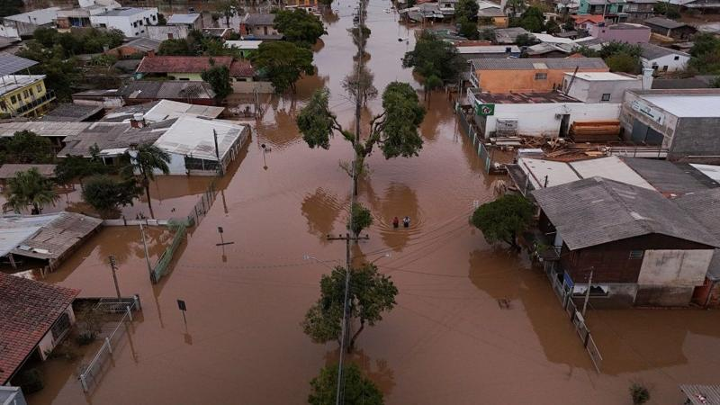

O 'berço do Rio Grande do Sul' que se prepara para avanço das águas que já devastaram parte do Estado
Centenas de quilômetros e 12 dias depois de iniciar seu caminho de destruição no Rio Grande do Sul, as águas de uma das maiores enchentes já vistas no mundo aproximam-se da fase final da jornada ao atingir a porção sul da Lagoa dos Patos.
É o fim, mas já foi o começo. Quando o brigadeiro português José da Silva Paes avistou do oceano a embocadura aberta da lagoa, em 1737, julgou que estava diante de um grande rio.
A ideia inspirou o nome da vila que fundou às margens do canal, Rio Grande, futura capital da província de mesmo nome.
Quase trezentos anos depois, os gaúchos que contemplam o canal natural que liga a lagoa ao Atlântico têm a impressão oposta à de Silva Paes: ele nunca pareceu tão pequeno diante da enxurrada que terá de despejar.
A Lagoa dos Patos estende-se por 250 km de comprimento e 10,3 mil km quadrados de área. Serve de receptáculo a uma bacia hidrográfica 12 vezes mais extensa.
Em comparação, o Canal do Norte é diminuto: tem 22 km de comprimento e 2 km de largura. Nesse duelo de Davi contra Golias, poucos apostam no canal.
Prefeito da cidade fundada por Silva Paes, Fábio Branco (MDB) torce pelo melhor, mas prepara a população para o pior.
Acostumado a enchentes em razão da vizinhança da lagoa, o município de 211 mil habitantes trabalha com cenários que apontam para 35 mil a 40 mil desalojados pelas águas. Até o momento, a cheia em alguns bairros já empurrou 500 pessoas para abrigos.
Como boa parte dos gaúchos, os habitantes de Rio Grande acostumaram-se nos últimos dias a tirar a sorte com réguas de medição.
Às 19h40min de ontem, o nível da Lagoa dos Patos medido pelo Centro de Comando da Marinha (CCMar) era de 2 metros e 36 centímetros, 1 metro e 56 centímetros acima do normal.
A prefeitura identificava 29 áreas de risco, nas quais o trânsito de automóveis era desaconselhado, havia interrompido totalmente o acesso rodoviário às ilhas e suspendido as aulas na rede municipal.
"Estou na área de risco", diz Branco à BBC News Brasil, por telefone. Morador do bairro Saco da Mangueira, ele já tirou móveis e objetos de valor de casa e prepara a transferência da família para a casa de parentes.
Por sorte, o cenário dos próximos dias depende de fatores situados além das margens da lagoa e do canal. Estendido sobre a grande planície litorânea gaúcha, sem serras ou morros no entorno, o mar de água doce que se aproxima depende, para se movimentar, da direção do vento e da ação das marés oceânicas.
Essas variáveis podem ser acompanhadas em modelos computadorizados impenetráveis para pessoas comuns, mas manejados como artefatos cotidianos por pesquisadores como Lauro Barcellos.
"Sofreremos um impacto de água numa quantidade que nunca antes conseguimos observar", afirma o diretor do Museu Oceanográfico de Rio Grande. Aos 68 anos, Barcellos dedica-se há 55 aos estudos oceanográficos, numa trajetória que lhe rendeu o título de doutor honoris causa pela Universidade de Rio Grande (Furg).
Muito além de uma luta entre a lagoa e o canal, o especialista mira águas mais profundas. "É difícil fazer uma identificação dos responsáveis. São os grandes sistemas que controlam a evolução da economia do mundo, o desmatamento, a mudança do clima. São vários fatores, umas pessoas acreditam e outras não", reflete.
Não se trata, sobretudo, de caso isolado. "Tudo que acontece já aconteceu. A diferença é que, hoje, ocorre com maior velocidade e a intervalos menores. De setembro até hoje, tivemos oito episódios de eventos semelhantes", explica.
Nem toda boa notícia para Rio Grande é alvissareira para quem está no percurso das águas. O vento do quadrante sul, que deve soprar por pelo menos mais oito dias no sentido contrário ao da corrente, contribui para represar a enxurrada e empurrá-la Lagoa dos Patos acima, prolongando o infortúnio de municípios situados a meio do caminho.
Na segunda-feira (6/5), quando ainda havia pessoas em telhados em Porto Alegre, Canoas, Guaíba e Eldorado do Sul, a lagoa já engolia a orla da Praia das Nereidas, em Arambaré, 144 km ao sul da capital. Na manhã de sexta-feira (10/5), três bairros registravam alagamentos e outros dois apresentavam risco.
Em São Lourenço do Sul, 218 km ao sul de Porto Alegre, muitas casas tinham sido inundadas no final da tarde de sexta-feira (10/5). A prefeitura tinha instalado quatro abrigos, e dois já operavam com lotação máxima.
Em nenhum município das margens da Lagoa, porém, o dia 10 foi tão tenso como em Pelotas. Maior cidade da Metade Sul do Estado, com 343 mil habitantes, esse antigo centro da indústria gaúcha de carne já computava a essa altura 632 desalojados distribuídos em sete abrigos da prefeitura e um número incerto de instalações particulares em igrejas, clubes e escolas.
Com o bloqueio da BR-290 em vários pontos e a suspensão da balsa em São José do Norte que faz a travessia do Canal do Norte, Pelotas estava no dia 10 isolada de Porto Alegre por via rodoviária.
A prefeitura começou a remover moradores das áreas de risco na quinta-feira (2/5). na Colônia de Pescadores Z-3, comunidade de 2 mil habitantes distante 22 km do centro, à margem da lagoa, moradores transferiram-se para a igreja da paróquia João Paulo II. Situado na própria colônia, o templo é célebre por nunca ter sido inundado.
Na noite de sexta-feira (10/5), a prefeita Paula Mascarenhas (PSDB) fez uma live diretamente do Laranjal, balneário na Lagoa dos Patos, onde 80 pessoas e 60 animais tiveram de ser removidos às pressas ao longo do dia.
"Desde terça-feira que a gente vem fazendo um apelo, a gente fez um mapa das áreas de risco, pedindo que as pessoas deixassem as suas casas. Muitas deixaram, mas outras tantas não acreditaram, quiseram esperar para ver e, com isso, se prejudicaram porque tiveram de sair às pressas, com pânico, correria", disse Paula.
Dois dias antes, a água cobriu o trapiche do Laranjal. Agora, o balneário corre o risco de ter cortada a ligação por terra com o resto do município.
Com água não se brinca, ensina Lauro Barcellos. "Água é um elemento extremamente pesado. Um metro cúbico de água pesa aproximadamente uma tonelada. Temos muitas pessoas em áreas onde já se sabe que haverá uma importante subida de nível (da lagoa). Não se pode ficar cego diante disso", afirma.
Para agravar a situação, o sul do Estado é castigado desde quinta-feira (9/5) por uma chuva intensa que desliza na ponta-de-lança de uma frente fria na direção norte. Com as quedas nos termômetros, uma pessoa submersa pode ter a temperatura corporal derrubada para cerca de 9ºC.
"Precisamos agir preventivamente", diz Fábio Branco. "E orar para que São Pedro esteja conosco nesta hora."
O santo que detém as chaves do céu – e, por conseguinte, da chuva –, segundo a crença católica, é o padroeiro de Rio Grande. E também do Rio Grande do Sul.